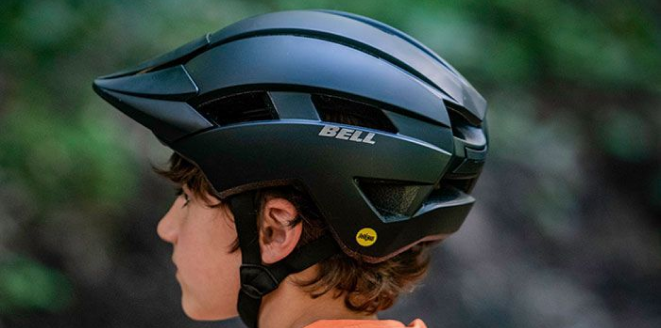
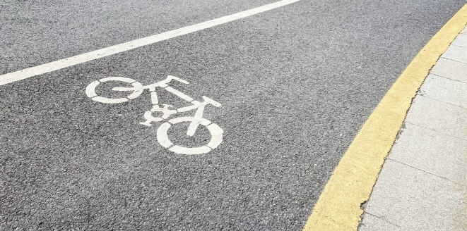

1.
Обязательное оборудование: шлем и отражающие элементы
Первая и самая важная мера безопасности для каждого велосипедиста — это правильное оборудование. Шлем является обязательным атрибутом, даже если вы катаетесь по спокойным районам. Он поможет избежать серьезных травм в случае падения.
Помимо шлема, важно оснастить велосипед и себя светоотражающими элементами или использовать одежду с отражающими вставками, особенно в темное время суток. Светоотражатели на колесах, задние и передние огни, а также специальные жилеты — все это сделает вас заметным на дороге, что критически важно в условиях
Можно схитрить и купить шлем со светоотражающими элементами!
Так вы станете еще заметнее для водителей!
2.
Правильное поведение на дороге
Основное правило для велосипедиста — это следовать правилам дорожного движения. Велосипедисты обязаны соблюдать те же правила, что и автомобилисты: двигаться по правой стороне, использовать велосипедные дорожки, если они есть, и соблюдать сигналы светофора.
Также важно быть внимательным к другим участникам движения. Например, если вы хотите повернуть, всегда подавайте сигнал рукой и убедитесь, что ваш маневр безопасен. На дороге очень важно не только думать о своем движении, но и учитывать возможные действия водителей машин и пешеходов.
3.
Как избежать аварийных ситуаций
Преимущественно большинство аварий с участием велосипедистов происходят из-за невнимательности водителей автомобилей. Чтобы минимизировать риск столкновения, всегда будьте готовы к неожиданным ситуациям. Важно учитывать следующие моменты:
- Передвижение в «мертвой зоне» — никогда не ездите в том месте, где водители не видят вас в зеркале. Это может быть слишком близко к боковому зеркалу автомобиля. Важно, чтобы вас было видно.
- Повороты и маневры — всегда заранее информируйте других участников движения о своих действиях, используя сигналы руками, и проверяйте зеркала, чтобы удостовериться в отсутствии препятствий.
4.
Особенности езды по ночам и в плохую погоду
Когда вы планируете кататься в темное время суток или в условиях плохой видимости (например, дождя или тумана), крайне важно дополнительно оснастить велосипед световыми приборами — передним и задним фонарем. Это поможет вам не только видеть дорогу, но и быть видимым для других участников движения. В дождливую погоду также стоит быть особенно внимательным. Дороги становятся скользкими, и тормоза могут работать с задержкой. Снижение скорости и избегание резких маневров также помогают избежать опасностей.